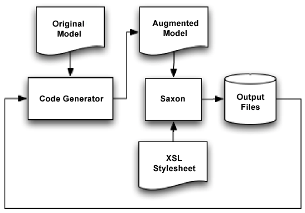

In part 1
of this series, we looked at the idea of generated code, which is code
written not by hand but by another application. The appeal of generated
code is that it can eliminate drudgery (and mistakes) in some kinds of
coding. A primary problem with this approach is getting the
generator-created code to integrate with existing code bases.
We introduced a workflow in which an XML document was used to
describe desired classes, whose source was then generated with XSLT,
via the Saxon XSLT processor. One downside of this approach is the need
for subclassing some parts of the generated code to add the
functionality that can't be generated for us. An alternative is to use
"safe zones".
Using Safe Zones
A safe zone is a comment-delimited section of code where you can add any custom code you require. Here is an example from getTotalAmount in the example from part 1:
You can make any changes you like to the interior of the highlighted
section and they will be preserved between code generation cycles. Of
course, you can have as many safe zones as you like, but you should use
them judiciously to demonstrate where you would like to see the code
extended, and not just anywhere.
Implementing safe zones is a little tricky because we have to scan
the original output files and store the safe-zone contents. Then we
need to feed the stored safe-zone contents back into the template so
they can be reintegrated into the new output.
So, how do we do that? Certainly XSLT can't take on that task alone.
The approach I will use in this article is to wrap the Saxon XSLT
engine in a Java application. This application will read the input XML,
then look through the original output files for safe zones. The
application then merges the safe-zone material back into the original
model as XML tags. It then invokes a modified version of the XSLT
template that we used in the original example. The flow is illustrated
in Figure 1.
 Figure 1. Flow for preserving safe zones in generated code
You could argue that mixing the safe-zone code into the model is
blasphemy, and in the case of XSLT you can have it read from more than
one data source. Using two files is something to think about, but it's
nice to know that a single file version works as well.
Let's start with the Java code for the code generator. We start with the ridiculously long preamble:
The parse section is where we read in the input XML and store it in a member variable in DOM form.
Next, we scan the original output files for the safe zones:
private void scanForSafeZones() throws Exception
{
// Creates a temporary has of safe zones where
// the key is the ID of the zone and the value
// is the code within the safe zone
Hashtable safeZones = new Hashtable();
// The start and end patterns
Pattern startPattern =
Pattern.compile( "\\/\\/ START-SAFE\\((.*?)\\)" );
Pattern endPattern =
Pattern.compile( "\\/\\/ END-SAFE" );
// Goes through the XML looking for classes
Element root = _document.getDocumentElement();
NodeList nodes = root.getElementsByTagName( "Class" );
for( int index = 0; index < nodes.getLength(); index++ )
{
Element elem =
(Element)nodes.item( index );
String className =
elem.getAttributeNode( "name" ).getNodeValue();
// Open up the file for the class name
File file = new File( "output/" +
className + ".java" );
BufferedReader reader =
new BufferedReader( new FileReader( file ) );
// Set up the state machine variables
boolean inSafeZone = false;
String zoneName = "";
StringBuffer safeBuffer = new StringBuffer();
// Go through the Java code a line at
// a time looking for safe zones
String line;
while( ( line = reader.readLine() ) != null )
{
if ( inSafeZone )
{
if (endPattern.matcher( line ).matches())
{
safeZones.put( zoneName,
safeBuffer.toString() );
inSafeZone = false;
safeBuffer.setLength( 0 );
}
else
{
safeBuffer.append( line + "\n" );
}
}
else
{
Matcher match =
startPattern.matcher( line );
if ( match.matches() )
{
inSafeZone = true;
zoneName = match.group( 1 );
}
}
}
reader.close();
}
// For each zone we find add a node
// in the input DOM
for (Enumeration sz = safeZones.keys() ;
sz.hasMoreElements() ;
)
{
String zoneName =
( String )sz.nextElement( );
String zoneValue =
( String )safeZones.get( zoneName );
Element elem =
_document.createElement( "safezone" );
elem.setAttribute( "id", zoneName );
elem.appendChild (
_document.createCDATASection( zoneValue ) );
root.appendChild( elem );
}
}
The important parts are where we create and use the start and end
regular expressions. We use these to find the start comment and to pick
out the safe-zone ID. The heart of the reader is a state machine. It
starts off outside the safe zone, then switches state inside the safe
zone, and back out when the safe-zone ends. Each time we reach the end
of a safe zone we push the zone into a hash table of zones using the
zone ID as a key.
When the entire file is read we augment the input XML DOM with some
extra tags that contain CData sections for the safe-zone code.
That was really the majority of the work. The next step is to run Saxon with the template file:
private void runTransform() throws Exception
{
Source xmlSource = new DOMSource( _document );
TransformerFactory transFact =
TransformerFactory.newInstance( );
Transformer trans =
transFact.newTransformer( new StreamSource(
new File( _templateFile ) ) );
trans.transform( xmlSource,
new StreamResult( System.out ) );
}
This code uses the TransformFactory; you could get any XSLT engine. For the example, however, I used Saxon 6.5.3.
The rest of the code just runs the methods in the proper order:
public void run()
{
try
{
readInputFile();
scanForSafeZones();
runTransform();
}
catch( Exception e )
{
System.out.println( e );
}
}
static public void main( String args[])
{
SafeGen gen = new SafeGen( "input.xml",
"main.xsl" );
gen.run();
}
}
To finish off the generator with the safe zones we need to make some
minor modifications to the XSLT template from the previous example. To
start with, we need to build Order.java instead of OrderBase.java. So this line:
The really tricky part here is to make sure that you can run the
template multiple times without adding any extra returns or spaces.
This means that the template must be absolutely symmetric. This version
is because the // END-SAFE text is on the same line as the xsl:value tag.
There are a few extras that aren't accounted for by the example:
The output files should be backed up before they are overwritten.
If you have any safe-zone regions that were not used in the output those should be reported to the user.
The generator should not write the file if the contents haven't changed. This will save you expensive re-compiles.
There need to be sections of comments at the top and the bottom of
the output that say that the file was generated, that it should not be
modified, and how it could be regenerated.
One More Alternative
There is another alternative for code generation combined with custom code in the same file.
You can invert the safe-zone model by having sections of the code
where the generator is able to add in code. These sections are
delimited by comments that the generator looks for in the input file.
Here is an example of what it might look like in the context of our
example:
public class Order
{
// START-GENERATED
// <Attribute name="number" type="integer"/>
// <Attribute name="date" type="date"/>
private int number;
public int getnumber() {return this.number;}
public void setnumber(int number) {this.number=number;}
private Date date;
public Date getdate() {return this.date;}
public void setdate(Date date) {this.date=date;}
// END-GENERATED
private Customer customer;
public Customer getCustomer() {return this.customer;}
public void setCustomer(Customer customer ) {this.customer=customer;}
public double getTotalAmount( boolean calculateVAT ) { return 0.0; }
}
The generator would look for the code block bracketed by the START-GENERATED and END-GENERATED sections and update that with new code as required.
Microsoft uses this technique in its developer tools that aid in
using the Microsoft Foundation Classes. In particular, they manage
blocks of event routing code within special commented sections.
The Downsides
Let's step back a little bit here at the end. Starting with some
downsides and stuff to look out for, and then finishing up with more
advantages of generation.
Code generation is controversial. The primary concern is that code
generation is a design smell... meaning that if you have to write so
much code for a platform, then the platform itself is probably bad.
Surprisingly, I agree in full with this argument. I think a platform
that requires an excessive amount of coding is a design problem.
Unfortunately, we are often stuck with platforms that are, at best, not
optimal, like J2EE. Code generation, in that case, is not the design
smell, but the solution to the design smell that you are stuck with.
There are other arguments against code generation, far too many to
put in this article. But there are lots of positives, as we have seen.
Conclusion
I started this article by saying that code generation was important
and it was something that you need to understand. Why is that? It's not
just because today's frameworks are code-intensive. It's also because
the code that generators build is far more consistent in form and
quality than hand code.
Using code generation also raises the level of abstraction. As you
can see in this example, the business model, and some of the logic, is
actually in an XML model and not in the code. That means you can port
your business model to other languages and technologies much more
easily than you could port source code.
Using the two techniques I have presented here can give you a
smoother approach to generating sections of your code than you would
have had if it were an all-or-nothing proposition.
Code Generation in Action:
A book written by the author of this article on code generation that
presents several models of generators and a wide variety of code
generation targets.
Jack Herrington is a software engineer with over twenty years of experience on numerous platforms and languages.
Related Articles
Extensible Code Generation with Java, Part 1
Jack Herrington argues that machine-generated code not only solves
problems of drudgery, but it can even be preferable to potentially
buggy ,hand-written code. In Part 1 of his series on code generation,
he shows how XSLT can be used to generate Java source from XML
descriptor files.
Are you ready to let Java write your Java for you?
Showing messages 1 through 6 of 6.
safe zones with un-safe comments??
2005-01-13 03:21:54 honeyjar
[Reply | View]
Using comments for anything else that comments becomes rapidly unusable if not supported by the language.
It's well known that this works well only in highly controlled and well-coordinated environments,.
Also about safe-zones syntax: Did anyone out there try a more
automated approach where the generator auto-discovers handmade
differences and preserves them (without having to delimit safe-zones)?
safe zones don't work
2005-01-12 01:04:45 jwenting
[Reply | View]
It's been tried. Netbeans had it, Visual Age had it.
It's extremely limiting, you cannot add anything substantial to your
classes without it being removed in the next code generation cycle.
Code generation should be limited only to those things that require no human modification at any time for any reason.
This might be very simple DTOs and maybe even very simple DAOs.
In a user interface maybe launchers for actions triggered by user interface elements might under certain conditions qualify.
But that's about it.
It's called velocity
2005-01-11 07:38:12 smartinumcp
[Reply | View]
Read it, use it, forget this.
Use code generators to create interfaces
2004-06-12 21:55:27 atrajano
[Reply | View]
I think if instead of using safe zones, have the code generator create interfaces which we specify our code implements.
The code generator can then create abstract classes that our code will
extend instead. Actually even the interface can be taken off, but its
still a good idea to code with the idea of interfaces instead of
concrete classes in general.
Why does this article only talk about one way of doing things and does
not give equal weights to other known working methods? Instead of using
SAFE zone tags and hoping the commented section will stay same over the
period, using a supplemental file that guides the code generator to use
Helper classes. These 2 articles barely scratch the surface of code
generation.
To give equal weight to the four other major methods of code generation
that I am aware of would require about 16,000 more words. What I was
trying to do in this article is concentrate on one type of code
generation by giving an in-depth example. I certainly agree that there
are more methods and I (and many others) have covered them in other
articles.
I do think the article provides a unique perspective on using a
templating language (XSLT) which is often used as a strictly output
only mechanism as part of a circular code generation workflow.